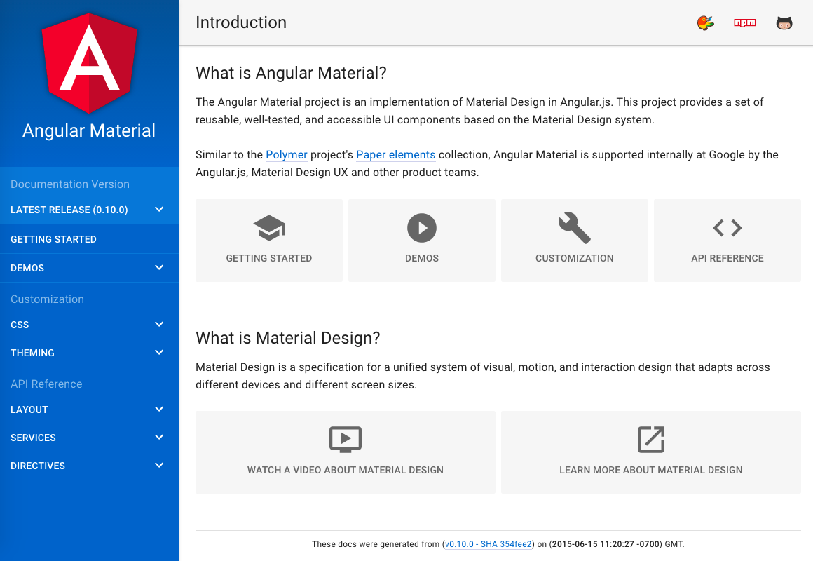
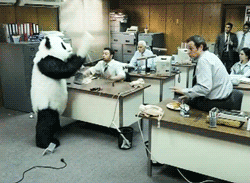

Developments in Angular.js Accessibility
Marcy Sutton, Seattle, WA
Developer @Substantial, Angular.js Contributor
Anti-patterns
Inaccessible Sites

Making it better
Virgin America Customer Service,Please accept our sincere apologies for the accessibility problems you were having.
Please be assured that your email has been shared with our Web Team. We will let them know that there are accessibility issues that prevent customers with disabilities from using our site.
Creating Accessible Examples
- Semantic HTML
- Keyboard focus styles
- Focus management
- Text alternatives
- Notifying the user
Angular.js Material Design
Semantic HTML
<button class="md-button" ng-click="doStuff()">
Material Button
</button>
<md-button role="button" tabIndex="0"
ng-keypress="doStuff()" ng-click="doStuff()">
Material Button
</md-button>
No Visible Focus
(real life example)
.navlist--main > li > a {
color: $white;
display: block;
&:hover {
text-decoration: underline;
}
}
You Had One Job
Visible Focus
.navlist--main > li > a {
color: $white;
display: block;
&:hover, &:focus {
color: $somethingElse;
text-decoration: underline;
}
}
Focus Management screencast
Focus Management code sample
<a ng-href="#/page" ng-click="focusSection()">Page</a>
$rootScope.$on('$locationChangeSuccess', openPage);
function openPage() {
$scope.closeMenu();
if (self.autoFocusContent) {
mainContentArea.focus();
self.autoFocusContent = false;
...
Text Alternatives
You will provide a text alternative.
$mdAria.expect(element, 'aria-label');
function expect(element, attrName, defaultValue) {
if (!element.hasAttribute(attrName)) {
if (defaultValue.length) {
element.attr(attrName, defaultValue);
} else {
$log.warn('ARIA: Attribute "', attrName, '", required for accessibility, is missing on element:', element);
}
Notifying the User
Notifying the User
<aria-status role="status">
<p ng-repeat="message in messages">{{message}}</p>
</aria-status>
switch (matches.length) {
case 0: return messages.splice(0);
case 1: return messages.push('There is 1 match.');
default: return messages.push('There are '
+ matches.length +' matches.' );
Improve the framework

ngAria
Accessibility Module in Angular 1.3+
ngAria
Adds support to these directives:
- ngModel
- ngDisabled
- ngShow
- ngHide
- ngClick
- ngDblClick
- ngMessages
ngAria & ngDisabled
<md-checkbox ng-disabled="true" aria-disabled="true"...
.directive('ngDisabled', ['$aria', function($aria) {
return $aria.$$watchExpr('ngDisabled', 'aria-disabled');
}])
ngAria & ngMessages
<label>Label <input type="text" minlength="5" /></label>
<div ng-messages="myForm.myField.$error">
<div ng-message="minlength, maxlength">
Your email must be between 5 and 100 characters long
.directive('ngMessages', function() {
return {
link: function(scope, elem, attr) {
if (!elem.attr('aria-live')) {
elem.attr('aria-live', 'assertive');
ngAria & ngClick
.directive('ngClick',['$aria', function($aria) {
return {
compile: function(scope, elem, attr) {
var nodeBlackList = ['BUTTON','A','INPUT','TEXTAREA'];
if (!elem.attr('role') && !isNodeOneOf(elem, nodeBlackList)) {
elem.attr('role', 'button');
}
if (!isNodeOneOf(elem, nodeBlackList)) {
elem.on('keypress', function(event) {
if (event.keyCode === 32 || event.keyCode === 13) {
scope.$apply(callback);
...
That's a lot of effort...
Just use buttons!
Angular 2.0
So long, directives
Changes in Angular 2.0
- No more Directive Definition Object Link opens in a new window
- No more Controllers
- Works with Web Components
- Bind to properties, not attributes
- No more jqLite DOM wrapper
- ES6 modules
Binding events
<button ng-click="deliverTacos()"
ng-focus="anticipationEvent()">
Give me tacos </button>
<button (click)="deliverTacos()"
(focus)="anticipationEvent()">
Give me tacos </button>
Angular 2 Todo (~fixed)
<div class="view"
[class.hidden]="todoEdit == todo">
<input type="checkbox"
(click)="completeMe(todo)"
[checked]="todo.completed"
id="todoInput">
<label for="todoInput">{{todo.title}}</label>
<button aria-label="delete" class="destroy"
(click)="deleteMe(todo)"></button>
</div>
Angular 2.0 on Github
Protractor
End-to-end testing for AngularJS
- Node.js command line application
- Runs on WebDriver
- Choose your test framework
- Great for continuous integration
Karl Groves, #a11ycampbay10% of the tests we can run automatically with Tenon.io catch ~67% of the accessibility errors…
Protractor A11Y Plugin
Test your site with:
- Chrome Accessibility Developer Tools
- Tenon.io
Testing for Accessibility!
- Check for Labels
- Validate Roles
- Watched ARIA Properties
- Interactions
- Color Contrast
Resources
All links open in new windows